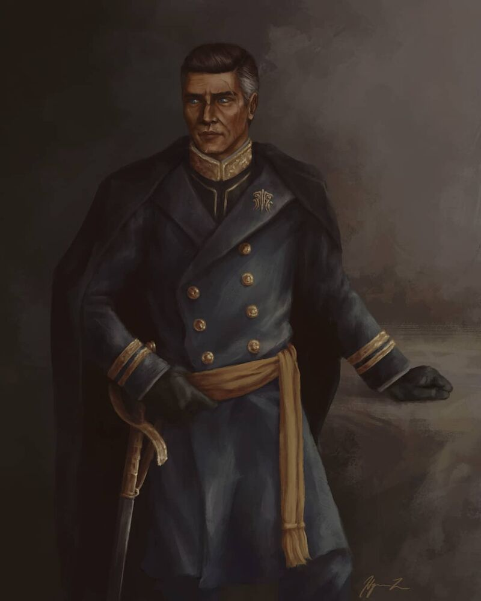

Dalinar Kohlin, from Brandon Sanderson's The Stormlight Archives, was an Alethi Bondsmith bound to the Stormfather. This, in addition to his previous position as the Kohlin Highprince, led to him being the King of Urithiru and leader of the Knights Radiant. Shortly before his death he held the Shard of Honor but released it resulting in his death.
Reasons I Like Him